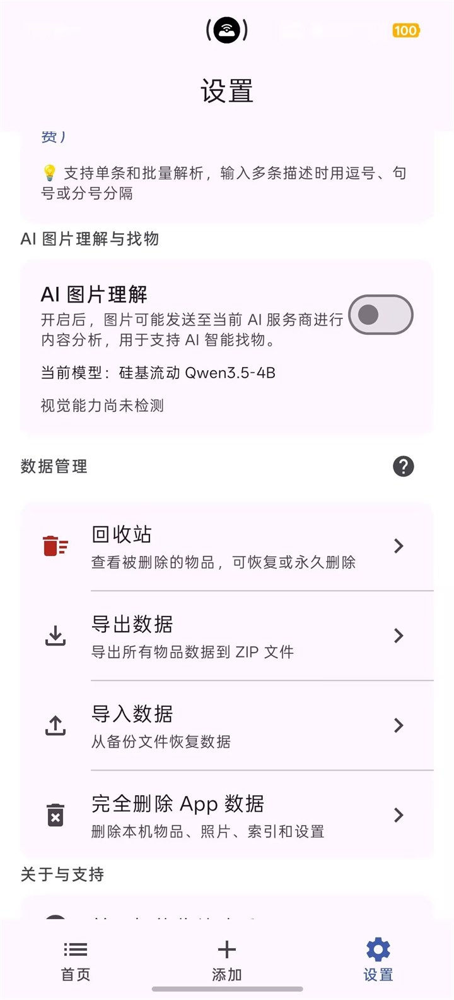

真实界面截图



01
Android 应用
智能收纳助手
用文字、键盘语音和照片记录物品放在哪里，需要时再快速找回来。
v1.2.0 已发布
Android 8.0+本地优先AI 可选增强
- 一句话可以描述多件物品，再由 AI 提取名称、地点和备注，确认后保存。
- 物品、照片和视觉索引优先留在手机中，AI 失败时仍能完成普通记录。
- 照片分析一次后形成本地可搜索索引，需要时再手动复核候选图片。
实践过程与限制
实践过程项目已经完成 v1.2.0 的发布记录和连续版本迭代。发布后的少数体验返修仍在补齐逐项真机证据，因此这里分别说明“版本已发布”和“测试范围”，不用一个状态概括全部。
当前限制AI 图片理解默认关闭，首次使用需要配置可用的模型服务；不同设备和模型服务之间仍可能存在实际差异。